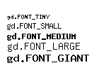

From the Lua Reference Manual:
Lua is an extension programming language designed to support general procedural programming with data description facilities. It also offers good support for object-oriented programming, functional programming, and data-driven programming. Lua is intended to be used as a powerful, light-weight configuration language for any program that needs one. Lua is implemented as a library, written in clean C (that is, in the common subset of ANSI C and C++).
Being an extension language, Lua has no notion of a main program: it only works embedded in a host client, called the embedding program or simply the host. This host program can invoke functions to execute a piece of Lua code, can write and read Lua variables, and can register C functions to be called by Lua code. Through the use of C functions, Lua can be augmented to cope with a wide range of different domains, thus creating customized programming languages sharing a syntactical framework.
The Lua distribution includes a stand-alone embedding program,
lua, that uses the Lua library to offer a complete Lua interpreter.Lua means "moon" in Portuguese and is pronounced LOO-ah.
For more information, please see the Lua homepage.
From the gd homepage:
gd is a graphics library. It allows your code to quickly draw images complete with lines, arcs, text, multiple colors, cut and paste from other images, and flood fills, and write out the result as a PNG or JPEG file. This is particularly useful in World Wide Web applications, where PNG and JPEG are two of the formats accepted for inline images by most browsers.
gd is not a paint program. If you are looking for a paint program, you are looking in the wrong place. If you are not a programmer, you are looking in the wrong place, unless you are installing a required library in order to run an application.
gd does not provide for every possible desirable graphics operation. It is not necessary or desirable for gd to become a kitchen-sink graphics package, but version 2.0 does include most frequently requested features, including both truecolor and palette images, resampling (smooth resizing of truecolor images) and so forth.
For more information, please see the gd homepage.
Lua-GD is copyrighted free software, distributed under the GNU Lesser General Public License, as follows:
This library is free software; you can redistribute it and/or modify it under the terms of the GNU Lesser General Public License as published by the Free Software Foundation; either version 2.1 of the License, or (at your option) any later version. This library is distributed in the hope that it will be useful, but WITHOUT ANY WARRANTY; without even the implied warranty of MERCHANTABILITY or FITNESS FOR A PARTICULAR PURPOSE. See the GNU Lesser General Public License for more details. You should have received a copy of the GNU Lesser General Public License along with this library; if not, write to the Free Software Foundation, Inc., 59 Temple Place - Suite 330, Boston, MA 02111-1307, USA.
A string with library's version information.
The constant 256. This is the maximum number of colors in a palette-based PNG file according to the PNG standard, and is also the maximum number of colors in a palette-based gd image. This of course does not apply to truecolor images.
Used in the functions gd.gd2 and gd.gd2Str
to indicate the image file format. This format is not intended for general
purpose use and should never be used to distribute images. It is a file
format allowing pseudo-random access to large image files. Its purpose
is solely to allow very fast loading of parts of images. You should
use GD2_FMT_RAW for faster loading (and bigger files)
or GD2_FMT_COMPRESSED for smaller files (and slower loading).
These constants are used with the function gd.filledArc
and can be added together. gd.ARC, gd.CHORD,
gd.PIE (synonym for gd.CHORD),
gd.NO_FILL and gd.EDGED. gd.ARC
and gd.CHORD are mutually exclusive; gd.CHORD
just connects the starting and ending angles with a straight line, while
gd.ARC produces a rounded edge. gd.PIE is a
synonym for gd.ARC. gd.NO_FILL indicates that
the arc or chord should be outlined, not filled. gd.EDGED,
used together with gd.NO_FILL, indicates that the beginning
and ending angles should be connected to the center; this is a good way
to outline (rather than fill) a 'pie slice'. See gd.filledArc
for details.
Used in place of a color when invoking a line-drawing function
such as gd.line or gd.rectangle. When
gd.ANTI_ALIASED is used as the color, the foreground color
set with gd.setAntiAliased is used, with antialiasing
mechanisms to minimize any "jagged" appearance. For more information,
see gd.setAntiAliased.
Used in place of a color when invoking a line-drawing function
such as gd.line or gd.rectangle. When
gd.BRUSHED is used as the color, the brush image set with
gd.setBrush is drawn in place of each pixel of the line
(the brush is usually larger than one pixel, creating the effect of a
wide paintbrush). See also gd.STYLED_BRUSHED for a way to
draw broken lines with a series of distinct copies of an image.
Used in place of a color when invoking a line-drawing function
such as gd.line or gd.rectangle. When
gd.STYLED is used as the color, the colors of the
pixels are drawn successively from the style that has been set
with gd.setStyle. If the color of a pixel is equal to
gd.TRANSPARENT, that pixel is not altered. (This mechanism
is completely unrelated to the "transparent color" of the image itself;
see gd.colorTransparent for that mechanism).
Used in place of a color when invoking a line-drawing function
such as gd.line or gd.rectangle. When
gd.STYLED_BRUSHED is used as the color, the brush image
set with gd.setBrush is drawn at each pixel of the line,
providing that the style set with gd.setStyle contains
a nonzero value (OR gd.TRANSPARENT, which does not equal
zero but is supported for consistency) for the current pixel. (Pixels
are drawn successively from the style as the line is drawn, returning to
the beginning when the available pixels in the style are exhausted.) Note
that this differs from the behavior of gd.STYLED, in which
the values in the style are used as actual pixel colors, except for
gd.TRANSPARENT.
Used in place of a normal color in gd.filledRectangle,
gd.filledPolygon, gd.fill, and
gd.fillToBorder. gd.TILED
selects a pixel from the tile image set with gd.setTile
in such a way as to ensure that the filled area will be tiled with
copies of the tile image. See the discussions of gd.fill
and gd.fillToBorder for special restrictions regarding
those functions.
Used in place of a normal color in a style to be set with
gd.setStyle. gd.TRANSPARENT is not the
transparent color index of the image; for that functionality please see
gd.colorTransparent.
These are the standard gd fonts used by gd.string and
gd.stringUp. Sizes and styles are shown bellow:

If you need another fonts, you should use TrueType fonts with
gd.stringFT.
Used to create palette-based images, with no more than 256
colors. Invoke gd.create with the x and y dimensions
of the desired image to return the new image or nil
on error. gd.createPalette is a synomym for
gd.create.
Example:
-- creates a 20x20px palette-based image local im = gd.create(20, 20)
You don't need to destroy an image by yourself. Lua has a garbage collector that detects when an piece of information becomes useless and "automagically" deletes it from memory.
Used to create truecolor images, with an essentially unlimited
number of colors. Invoke gd.createTrueColor with the x and
y dimensions of the desired image to return the new image or nil
on error. Truecolor images are always filled with black at creation
time. There is no concept of a "background" color index.
Example:
-- creates a 20x20px true color image local im = gd.createTrueColor(20, 20)
You don't need to destroy an image by yourself. Lua has a garbage collector that detects when an piece of information becomes useless and "automagically" deletes it from memory.
The function creates a new palette-based image from a truecolor image using a high-quality two-pass quantization routine. If the dither flag is set to true, the image will be dithered to approximate colors better, at the expense of some obvious "speckling". colorsWanted, an integer value, can be anything up to 256. If the original source image includes photographic information or anything that came out of a JPEG, 256 is strongly recommended. 100% transparency of a single transparent color in the original truecolor image will be preserved. There is no other support for preservation of alpha channel or transparency in the destination image.
For best results, don't use this function -- write real truecolor PNGs and JPEGs. The disk space gain of conversion to palette is not great (for small images it can be negative) and the quality loss is ugly.
gd.createFromJpeg is called to load truecolor images from
JPEG format files. Invoke gd.createFromJpeg with a string
pointing to an existing file containing the desired image to return a new
truecolor image or nil if unable to load the image (most often
because the file is corrupt or does not contain a JPEG image). You can
determine the size of the image with gd.sizeXY. The returned
image is always a truecolor image.
gd.createFromPng is called to load images from PNG format
files. Invoke gd.createFromPng with a string pointing to
an existing file containing the desired image to return a new image or
nil if unable to load the image (most often because the file is
corrupt or does not contain a PNG image). You can determine the size of
the image with gd.sizeXY.
If the PNG image being loaded is a truecolor image, the resulting value will refer to a truecolor image. If the PNG image being loaded is a palette or grayscale image, the resulting data will refer to a palette image. gd retains only 8 bits of resolution for each of the red, green and blue channels, and only 7 bits of resolution for the alpha channel. The former restriction affects only a handful of very rare 48-bit color and 16-bit grayscale PNG images. The second restriction affects all semitransparent PNG images, but the difference is essentially invisible to the eye. 7 bits of alpha channel resolution is, in practice, quite a lot.
Example:
-- copies the content of picture.png to a new image
local im = gd.createFromPng("picture.png")
gd.createFromGif is called to load images from GIF format
files. Invoke gd.createFromGif with a string pointing to
an existing file containing the desired image to return a new image or
nil if unable to load the image (most often because the file is
corrupt or does not contain a GIF image). You can determine the size of
the image with gd.sizeXY.
gd.createFromGd is called to load images from gd format
files. Invoke gd.createFromGd with a string pointing to
an existing file containing the desired image to return a new image or
nil if unable to load the image (most often because the file is
corrupt or does not contain a gd image). You can determine the size of
the image with gd.sizeXY. This format is not intended for
general purpose use and should never be used to distribute images. Its
purpose is solely to allow very fast loading of images.
gd.createFromGd2 is called to load images from gd2 format
files. Invoke gd.createFromGd2 with a string pointing to
an existing file containing the desired image to return a new image or
nil if unable to load the image (most often because the file is
corrupt or does not contain a gd2 image). You can determine the size of
the image with gd.sizeXY. This format is not intended for
general purpose use and should never be used to distribute images. Its
purpose is solely to allow very fast loading of images.
gd.createFromGd2Part is called to load parts
of images from gd2 format files. Invoked in the same way as
gd.createFromGd2, but with extra parameters indicating the
source (x, y) and width/height of the desired image.
Example:
-- Being base.gd2 a 40x40px image, copies its upper-left part to a new image
local im = gd.createFromGd2Part("base.gd2", 0, 0, 20, 20)
gd.createFromXbm is called to load images from monochrome
X bitmap format files. Invoke gd.createFromXbm with a string
pointing to an existing file containing the desired image to return a
new image or nil if unable to load the image (most often because
the file is corrupt or does not contain a XBM image). You can determine
the size of the image with gd.sizeXY.
gd.createFromXpm is called to load images from color X
bitmap format files. Invoke gd.createFromXpm with a string
pointing to an existing file containing the desired image to return a
new image or nil if unable to load the image (most often because
the file is corrupt or does not contain a XPM image). You can determine
the size of the image with gd.sizeXY.
gd.createFromJpegStr is called to load
truecolor images from strings with JPEG format image data. Invoke
gd.createFromJpegStr passing a string with the desired
image to return a new truecolor image or nil if unable to
load the image (most often because the data is corrupt or does not
contain a JPEG image). You can determine the size of the image with
gd.sizeXY. The returned image is always a truecolor
image.
gd.createFromGifStr is called to load
palette-based images from strings with GIF format image data. Invoke
gd.createFromGifStr passing a string with the desired image
to return a new image or nil if unable to load the image (most
often because the data is corrupt or does not contain a GIF image). You
can determine the size of the image with gd.sizeXY.
gd.createFromPngStr is called to load images from strings
with PNG format image data. Invoke gd.createFromPngStr
passing a string with the desired image to return a new image or
nil if unable to load the image (most often because the data is
corrupt or does not contain a PNG image). You can determine the size of
the image with gd.sizeXY.
If the PNG image being loaded is a truecolor image, the resulting value will refer to a truecolor image. If the PNG image being loaded is a palette or grayscale image, the resulting data will refer to a palette image. gd retains only 8 bits of resolution for each of the red, green and blue channels, and only 7 bits of resolution for the alpha channel. The former restriction affects only a handful of very rare 48-bit color and 16-bit grayscale PNG images. The second restriction affects all semitransparent PNG images, but the difference is essentially invisible to the eye. 7 bits of alpha channel resolution is, in practice, quite a lot.
Example:
-- reads the contents of the file to a string
fp = io.open("picture.png")
str = fp:read("*a")
fp:close()
-- creates an image from the string
local im = gd.createFromPngStr(str)
gd.createFromGdStr is called to load images from strings
with gd format image data. Invoke gd.createFromGdStr passing
a string with the desired image to return a new image or nil
if unable to load the image (most often because the data is corrupt or
does not contain a gd image). You can determine the size of the image
with gd.sizeXY. This format is not intended for general
purpose use and should never be used to distribute images. Its purpose
is solely to allow very fast loading of images.
gd.createFromGd2Str is called to load images from strings
with gd2 format image data. Invoke gd.createFromGd2Str
passing a string with the desired image to return a new image or
nil if unable to load the image (most often because the data is
corrupt or does not contain a gd2 image). You can determine the size of
the image with gd.sizeXY. This format is not intended for
general purpose use and should never be used to distribute images. Its
purpose is solely to allow very fast loading of images.
gd.createFromGd2PartStr is called to load parts
of images from gd2 format strings. Invoked in the same way as
gd.createFromGd2Str, but with extra parameters indicating
the source (x, y) and width/height of the desired image.
Outputs the image to a PNG file with the specified name (overwriting existing files). This function returns nil on error (eg. permission denied to overwrite an existing file) and true on success.
Example:
-- creates a new image
local im = gd.createTrueColor(20, 20)
-- ** DO SOME ART HERE **
-- writes the image to a PNG file.
im:png("picture.png")
If you want to check if the writting was succeful:
-- creates a new image
local im = gd.createTrueColor(20, 20)
-- ** DO SOME ART HERE **
if im:png("picture.png") then
print("Image written to disk")
else
print("Oops, an error...")
end
Similiar to gd.png, but allows you to specify the
compression level of a PNG image, from 1 to 6 (or -1 for the default
compression level of libpng). This function returns nil on error
(eg. permission denied to overwrite an existing file) and true
on success.
Outputs the image to a JPEG file with the specified name (overwriting existing files). You must specify the quality of the generated JPEG file from 1 (worst quality, small files) to 100 (best quality, large files). This function returns nil on error (eg. permission denied to overwrite an existing file) and true on success.
Outputs the image to a GIF file with the specified name (overwriting existing files). This function returns nil on error (eg. permission denied to overwrite an existing file) and true on success.
Outputs the image to a gd file with the specified name (overwriting existing files). This function returns nil on error (eg. permission denied to overwrite an existing file) and true on success. This format is not intended for general purpose use and should never be used to distribute images. Its purpose is solely to allow very fast loading of images.
Outputs the image to a gd file with the specified name (overwriting
existing files). This function returns nil on error (eg. permission
denied to overwrite an existing file) and true on success. You
must specify the chunk size (an integer, or 0 for the default)
and the file format, which can be gd.GD2_FMT_RAW or
gd.GD2_FMT_COMPRESSED. This format is not intended for
general purpose use and should never be used to distribute images. Its
purpose is solely to allow very fast loading of images.
Outputs the image to a WBMP file with the specified name (overwriting existing files). WBMP file support is black and white only. The color index specified by the fg argument is the "foreground", and only pixels of this color will be set in the WBMP file. All other pixels will be considered "background". This function returns nil on error (eg. permission denied to overwrite an existing file) and true on success.
This function returns the image in the PNG format as a Lua string or nil on error (eg. a corrupted image).
Similiar to gd.pngStr, but allows you to specify the
compression level of a PNG image, from 1 to 6 (or -1 for the default
compression level of libpng). This function returns nil on
error.
This function returns the image in the JPEG format as a Lua string or nil on error (eg. a corrupted image). You must specify the quality of the generated JPEG data from 1 (worst quality, small string) to 100 (best quality, large string).
Example:
-- creates a new image
local im = gd.createTrueColor(20, 20)
-- ** DO SOME ART HERE **
-- writes the image to a PNG file.
im:png("picture.png")
-- writes the image to stdout in the JPEG format
io.write(im:jpegStr(75))
This function returns the image in the GIF format as a Lua string or nil on error (eg. a corrupted image).
This function returns the image in the gd format as a Lua string or nil on error (eg. a corrupted image).
This function returns the image in the gd2 format as a Lua string or
nil on error (eg. a corrupted image). You must specify the chunk
size (an integer, or 0 for the default) and the data format, which can be
gd.GD2_FMT_RAW or gd.GD2_FMT_COMPRESSED. This
format is not intended for general purpose use and should never be used
to distribute images. Its purpose is solely to allow very fast loading
of images.
This function returns the image in the WBMP format as a Lua string or nil on error (eg. a corrupted image). WBMP format support is black and white only. The color index specified by the fg argument is the "foreground", and only pixels of this color will be set in the WBMP string. All other pixels will be considered "background".
colorAllocate() finds the first available color
index in the image specified, sets its RGB values to those requested
(255 is the maximum for each), and returns the index of the new color
table entry, or an RGBA value in the case of a truecolor image; in
either case you can then use the returned value as a parameter to
drawing functions. When creating a new palette-based image, the first
time you invoke this function, you are setting the background color for
that image.
In the event that all gd.MAX_COLORS colors (256)
have already been allocated, colorAllocate will
return nil to indicate failure. (This is not uncommon when working
with existing PNG files that already use 256 colors.) Note that
colorAllocate does not check for existing colors that match
your request; see colorExact, colorClosest
and colorClosestHWB for ways to locate existing colors
that approximate the color desired in situations where a new color is
not available.
colorAllocateAlpha finds the first available color index
in the image specified, sets its RGBA values to those requested (255 is
the maximum for red, green and blue, and 127 represents full transparency
for alpha), and returns the index of the new color table entry, or an RGBA
value in the case of a truecolor image; in either case you can then use
the returned value as a parameter to drawing functions. When creating
a new palette-based image, the first time you invoke this function,
you are setting the background color for that image.
In the event that all gd.MAX_COLORS colors (256) have
already been allocated, colorAllocateAlpha will return
nil to indicate failure. (This is not uncommon when working with
existing palette-based PNG files that already use 256 colors.) Note
that colorAllocateAlpha does not check for existing
colors that match your request; see colorExactAlpha and
colorClosestAlpha for ways to locate existing colors that
approximate the color desired in situations where a new color is not
available. Also see colorResolveAlpha.
colorClosest searches the colors which have been defined
thus far in the image specified and returns the index of the color with
RGB values closest to those of the request. (Closeness is determined
by Euclidian distance, which is used to determine the distance in
three-dimensional color space between colors.)
If no colors have yet been allocated in the image,
colorClosest returns nil.
When applied to a truecolor image, this function always succeeds in returning the desired color.
This function is most useful as a backup method for choosing a
drawing color when an image already contains gd.MAX_COLORS
(256) colors and no more can be allocated. (This is not uncommon when
working with existing PNG files that already use many colors.) See
colorExact for a method of locating exact matches only.
colorClosestAlpha searches the colors which have been
defined thus far in the image specified and returns the index of the
color with RGBA values closest to those of the request. (Closeness is
determined by Euclidian distance, which is used to determine the distance
in four-dimensional color/alpha space between colors.)
If no colors have yet been allocated in the image,
colorClosestAlpha returns nil.
When applied to a truecolor image, this function always succeeds in returning the desired color.
This function is most useful as a backup method for
choosing a drawing color when a palette-based image already
contains gd.MAX_COLORS (256) colors and no more can be
allocated. (This is not uncommon when working with existing palette-based
PNG files that already use many colors.) See colorExactAlpha
for a method of locating exact matches only.
colorClosestHWB searches the colors which have been
defined thus far in the image specified and returns the index of the color
with hue, whiteness and blackness closest to the requested color. This
scheme is typically superior to the Euclidian distance scheme used by
colorClosest.
If no colors have yet been allocated in the image,
colorClosestHWB returns nil.
When applied to a truecolor image, this function always succeeds in returning the desired color.
This function is most useful as a backup method for choosing a
drawing color when an image already contains gd.MAX_COLORS
(256) colors and no more can be allocated. (This is not uncommon when
working with existing PNG files that already use many colors.) See
colorExact for a method of locating exact matches only.
colorExact searches the colors which have been defined
thus far in the image specified and returns the index of the first
color with RGB values which exactly match those of the request. If no
allocated color matches the request precisely, colorExact
returns nil. See colorClosest for a way to find the
color closest to the color requested.
When applied to a truecolor image, this function always succeeds in returning the desired color.
colorExactAlpha searches the colors which have
been defined thus far in the image specified and returns the
index of the first color with RGBA values which exactly match
those of the request. If no allocated color matches the request
precisely, colorExactAlpha returns nil. See
colorClosestAlpha for a way to find the color closest to
the color requested.
When applied to a truecolor image, this function always succeeds in returning the desired color.
colorResolve searches the colors which have been defined
thus far in the image specified and returns the index of the first color
with RGB values which exactly match those of the request. If no allocated
color matches the request precisely, then colorResolve
tries to allocate the exact color. If there is no space left in
the color table then ColorResolve returns the closest color (as in
colorClosest). This function always returns an index of a
color.
When applied to a truecolor image, this function always succeeds in returning the desired color.
colorResolveAlpha searches the colors which have
been defined thus far in the image specified and returns the index
of the first color with RGBA values which exactly match those of the
request. If no allocated color matches the request precisely, then
colorResolveAlpha tries to allocate the exact color. If there
is no space left in the color table then colorResolveAlpha
returns the closest color (as in colorClosestAlpha). This
function always returns an index of a color.
When applied to a truecolor image, this function always succeeds in returning the desired color.
This function returns the number of colors currently allocated in a palette image. For truecolor images, the result of this call is undefined and should not be used.
This function returns the red portion of the specified color in the image. This function works for both palette and truecolor images.
This function returns the blue portion of the specified color in the image. This function works for both palette and truecolor images.
This function returns the green portion of the specified color in the image. This function works for both palette and truecolor images.
This function returns the alpha portion of the specified color in the image. This function works for both palette and truecolor images.
This function returns the current transparent color index in
the image. If there is no transparent color, getTransparent
returns nil.
colorTransparent sets the transparent color index for
the specified image to the specified index. To indicate that there
should be no transparent color, invoke colorTransparent
with a color index of nil (or passing no color index). Note that
JPEG images do not support transparency, so this setting has no effect
when writing JPEG images.
The color index used should be an index allocated by
colorAllocate, whether explicitly invoked by your code or
implicitly invoked by loading an image. In order to ensure that your
image has a reasonable appearance when viewed by users who do not
have transparent background capabilities (or when you are writing a
JPEG-format file, which does not support transparency), be sure to give
reasonable RGB values to the color you allocate for use as a transparent
color, even though it will be transparent on systems that support PNG
transparency.
colorDeallocate marks the specified color as being
available for reuse. It does not attempt to determine whether the
color index is still in use in the image. After a call to this
function, the next call to colorAllocate for the same
image will set new RGB values for that color index, changing the color
of any pixels which have that index as a result. If multiple calls to
colorDeallocate are made consecutively, the lowest-numbered
index among them will be reused by the next colorAllocate
call.
boundsSafe returns true if the specified point
is within the current clipping rectangle, false if not. The
clipping rectangle is set by setClip and defaults to the
entire image. This function is intended primarily for use by those who
wish to add functions to Lua-GD. All of the drawing functions already
clip safely.
getPixel returns the color index of a particular pixel.
sizeX returns the width of the image in pixels.
sizeY returns the height of the image in pixels.
sizeXY returns the width and the height of the image
in pixels. This function has no C equivalent because, unlike Lua,
C functions cannot return multiple values.
Example:
local x, y = im:sizeXY()
Fetches the boundaries of the current clipping rectangle. This function returns four numbers.
Example:
local x1, y1, x2, y2 = im:getClip()
Establishes a clipping rectangle. Once setClip has been
called, all future drawing operations will remain within the specified
clipping area, until a new setClip call takes place. For
instance, if a clipping rectangle of 25, 25, 75, 75 has been set within
a 100x100 image, a diagonal line from 0,0 to 99,99 will appear only
between 25,25 and 75,75.
setPixel sets a pixel to a particular color index.
line is used to draw a line between two endpoints
(x1,y1 and x2, y2). The line is drawn using the color index
specified. Note that the color index can be an actual color returned
by colorAllocate or one of gd.STYLED,
gd.BRUSHED or gd.STYLED_BRUSHED.
rectangle is used to draw a rectangle with the two
corners (upper left first, then lower right) specified, using the color
index specified.
filledRectangle is used to draw a rectangle with the
two corners (upper left first, then lower right) specified, filled using
the color index specified.
polygon is used to draw a polygon with the verticies
(at least 3) specified in the table, using the color index specified.
Example:
im = assert(gd.createTrueColor(80, 80))
black = im:colorAllocate(0, 0, 0)
white = im:colorAllocate(255, 255, 255)
im:polygon( { { 10, 10 }, { 10, 20 }, { 20, 20 }, { 20, 10 } }, white)
im:png("out.png")
polygon is used to fill a polygon with the verticies
(at least 3) specified in the table, using the color index specified.
Example:
im = assert(gd.createTrueColor(80, 80))
black = im:colorAllocate(0, 0, 0)
white = im:colorAllocate(255, 255, 255)
im:filledPolygon( { { 30, 30 }, { 30, 40 }, { 40, 40 }, { 40, 30 } }, white)
im:png("out.png")
openPolygon is used to draw a sequence of lines with the
verticies (at least 3) specified, using the color index specified. Unlike
polygon, the enpoints of the line sequence are not connected to
a closed polygon.
Example:
im = assert(gd.createTrueColor(80, 80))
black = im:colorAllocate(0, 0, 0)
white = im:colorAllocate(255, 255, 255)
im:openPolygon( { { 50, 50 }, { 50, 60 }, { 60, 60 }, { 60, 50 } }, white)
im:png("out.png")
arc is used to draw a partial ellipse centered at the
given point, with the specified width and height in pixels. The arc
begins at the position in degrees specified by s and ends at the
position specified by e. The arc is drawn in the color specified
by the last argument. A circle can be drawn by beginning from 0 degrees
and ending at 360 degrees, with width and height being equal. e
must be greater than s. Values greater than 360 are interpreted
modulo 360.
filledArc is used to draw a partial ellipse centered at
the given point, with the specified width and height in pixels. The arc
begins at the position in degrees specified by s and ends at the
position specified by e. The arc is filled in the color specified
by color. A circle can be drawn by beginning from 0 degrees
and ending at 360 degrees, with width and height being equal. e
must be greater than s. Values greater than 360 are interpreted
modulo 360. The last argument is a sum of the following possibilities:
gd.ARC, gd.CHORD, gd.PIE
(synonym for gd.CHORD), gd.NO_FILL and
gd.EDGED. gd.ARC and gd.CHORD are
mutually exclusive; gd.CHORD just connects the starting
and ending angles with a straight line, while gd.ARC
produces a rounded edge. gd.PIE is a synonym for
gd.ARC. gd.NO_FILL indicates that the arc
or chord should be outlined, not filled. gd.EDGED, used
together with gd.NO_FILL, indicates that the beginning and
ending angles should be connected to the center; this is a good way to
outline (rather than fill) a 'pie slice'.
filledEllipse is used to draw an ellipse centered at the
given point, with the specified width and height in pixels. The ellipse
is filled in the color specified by the last argument.
fill floods a portion of the image with the specified
color, beginning at the specified point and flooding the surrounding
region of the same color as the starting point. For a way of flooding
a region defined by a specific border color rather than by its interior
color, see fillToBorder.
The fill color can be gd.TILED, resulting in a tile
fill using another image as the tile. However, the tile image cannot be
transparent. If the image you wish to fill with has a transparent color
index, call setTransparent on the tile image and set the
transparent color index to nil to turn off its transparency.
Note that fill is recursive. It is not the most
naive implementation possible, and the implementation is expected to
improve, but there will always be degenerate cases in which the stack
can become very deep. This can be a problem in MSDOS and MS Windows 3.1
environments. (Of course, in a Unix or Windows 95/98/NT environment with
a proper stack, this is not a problem at all.)
fillToBorder floods a portion of the image with the
specified color, beginning at the specified point and stopping at the
specified border color. For a way of flooding an area defined by the
color of the starting point, see fill.
The border color cannot be a special color such as
gd.TILED; it must be a proper solid color. The fill color
can be, however.
Note that fillToBorder is recursive. It is not the most
naive implementation possible, and the implementation is expected to
improve, but there will always be degenerate cases in which the stack
can become very deep. This can be a problem in MSDOS and MS Windows 3.1
environments. (Of course, in a Unix or Windows 95/98/NT environment with
a proper stack, this is not a problem at all.)
This function draws the string in the fourth argument on the image
using one of the standard gd fonts (gd.FONT_TINY,
gd.FONT_SMALL, gd.FONT_MEDIUM,
gd.FONT_LARGE or gd.FONT_GIANT) from left
to right, starting from the (x, y) point and with the color specified
by the fifth argument. The string must have only ISO-8859-1 characters
(you should use gd.stringFT and True Type fonts for drawing
Unicode strings.
Example:
im = gd.create(140, 80)
white = im:colorAllocate(255, 255, 255)
black = im:colorAllocate(0, 0, 0)
im:string(gd.FONT_TINY, 10, 20, "TINY", black)
im:string(gd.FONT_SMALL, 10, 30, "SMALL", black)
im:string(gd.FONT_MEDIUM, 10, 45, "MEDIUM", black)
im:string(gd.FONT_LARGE, 10, 58, "LARGE", black)
im:string(gd.FONT_GIANT, 10, 75, "GIANT", black)
im:png("out.png")
Similar to gd.string but the string will be drawn
vertically (rotated 90 degrees), from bottom to up, starting from the
(x, y) point. The string must have only ISO-8859-1 characters. If you
want use Unicode characters or other rotations than 90°, you should
use gd.stringFT and True Type fonts.
stringFT draws a string of anti-aliased characters on the
image using the FreeType library to render user-supplied TrueType fonts.
The string is anti-aliased, meaning that there should be fewer "jaggies"
visible. The fontname is the full pathname to a TrueType font file,
or a font face name if the GDFONTPATH environment variable
have been set intelligently. In the absence of a full path, the font face
name may be presented with or without extension. Font names can also be
fontconfig
patterns (see gd.useFontConfig) so, the library will
automatically use fonts from your operating system.
The string argument is considered to be encoded via the UTF-8
standard; also, HTML entities are supported, including decimal,
hexadecimal, and named entities. Those who are passing ordinary
ASCII strings may have difficulty with the & character unless
encoded correctly as & but should have no other
difficulties.
The string may be arbitrarily scaled (ptsize) and rotated (angle in
radians). The direction of rotation is counter-clockwise, with 0 radians
(0 degrees) at 3 o'clock and PI/2 radians (90 degrees) at 12 o'clock
(you can use math.rad to convert degrees to radians).
The string is rendered in the color indicated by the color index. Use
the negative of the desired color index to disable anti-aliasing.
This function return eight values with the limits of the rendered text on sucess or nil on failure. The following code show how to use them to draw a bounding rectangle arround the text.
im = gd.createTrueColor(100, 100)
black = im:colorAllocate(0, 0, 0)
white = im:colorAllocate(255, 255, 255)
blue = im:colorAllocate(0, 0, 240)
im:filledRectangle(0, 0, 100, 100, black)
llx, lly, lrx, lry, urx, ury, ulx, uly = im:stringFT(white, "Vera.ttf", 20, math.rad(45), 20, 90, "Lua-GD")
im:polygon({ {llx, lly}, {lrx, lry}, {urx, ury}, {ulx, uly} }, blue)
Variables used above can be translated as follows. The points are relative to the text regardless of the angle, so "upper left" means in the top left-hand corner seeing the text horizontally.
| # | Name | Meaning |
| 1 | llx | lower left corner, X position |
| 2 | lly | lower left corner, Y position |
| 3 | lrx | lower right corner, X position |
| 4 | lry | lower right corner, Y position |
| 5 | urx | upper right corner, X position |
| 6 | ury | upper right corner, Y position |
| 7 | ulx | upper left corner, X position |
| 8 | uly | upper left corner, Y position |
Also, there is a way to get these values before drawing on the image
passing nil as the first argument of gd.stringFT (note
the absence of the colon notation!), as follows. This is a relatively
cheap operation if followed by a rendering of the same string, because
of the caching of the partial rendering during bounding rectangle
calculation.
llx, lly, lrx, lry, urx, ury, ulx, uly = gd.stringFT(nil, white, "Vera.ttf", 20, math.rad(45), 20, 90, "Lua-GD")
Draws the text strings specified by top and bottom on
the image, curved along the edge of a circle of radius radius,
with its center at cx and cy. top is written
clockwise along the top; bottom is written counterclockwise along
the bottom. textRadius determines the "height" of each character;
if textRadius is 1/2 of radius, characters extend halfway
from the edge to the center. fillPortion varies from 0 to 1.0,
with useful values from about 0.4 to 0.9, and determines how much of the
180 degrees of arc assigned to each section of text is actually occupied
by text; 0.9 looks better than 1.0 which is rather crowded. fontname
is a freetype font; see gd.stringFT. points is
passed to the freetype engine and has an effect on hinting; although
the size of the text is determined by radius, textRadius,
and fillPortion, you should pass a point size that "hints"
appropriately -- if you know the text will be large, pass a large point
size such as 24.0 to get the best results. color can be any color,
and may have an alpha component, do blending, etc.
GD has the ability to use
fontconfig
patterns rather than font file names as parameters to
gd.stringFT and gd.stringFTCircle. For
backwards compatibility reasons, the fontlist parameter to those
functions is still expected to be a full or partial font file path
name or list thereof by default. However, as a convenience, a single
call to gd.useFontConfig with a true parameter
configures Lua-GD to expect the fontlist parameter to be a fontconfig
pattern. Otherwise, calling gd.useFontConfig with a
false parameter will disable the fontconfig patters.
This function initializes the font cache for freetype text
output functions such as gd.stringFT. If this function
is not called by the programmer, it is invoked automatically on the
first truetype text output call, which is perfectly safe unless the
application is multithreaded (either using LuaThreads or running Lua from
a different thread in your host program which also uses gd from the C API)
. Multithreaded applications should directly invoke this function before
allowing any thread to use freetype text output. You don't need to call
this functions if you are using Lua coroutines because any calls from
Lua to C API ara atomic. This function returns true on success
or false if the freetype library fails to initialize.
This function releases the memory used by the freetype font cache and the text output mutex. Applications that use Lua-GD for their entire lifetime, then exit, need not call this function. This function has no return value.
gd.copy is used to copy a rectangular portion of one
image to another image (For a way of stretching or shrinking the image
in the process, see gd.copyResized).
The dstImage argument is the destination image to which the region will be copied (you can use the colon notation for it). The srcImage argument is the source image from which the region is copied. The dstX and dstY arguments specify the point in the destination image to which the region will be copied. The srcX and srcY arguments specify the upper left corner of the region in the source image. The w and h arguments specify the width and height of the region.
When you copy a region from one location in an image to another
location in the same image, gd.copy will perform as
expected unless the regions overlap, in which case the result is
unpredictable.
Important note on copying between images: since different
images do not necessarily have the same color tables, pixels are
not simply set to the same color index values to copy them. If the
destination image is a palette image, this function will use the
gd.colorResolve function to determine the best color
available.
gd.copyResized is used to copy a rectangular portion of
one image to another image. The X and Y dimensions of the original region
and the destination region can vary, resulting in stretching or shrinking
of the region as appropriate (For a simpler version of this function
which does not deal with resizing, see gd.copy).
The dstImage argument is the destination image to which the
region will be copied. The srcImage argument is the source
image from which the region is copied. The dstX and dstY
arguments specify the point in the destination image to which the region
will be copied. The srcX and srcY arguments specify the
upper left corner of the region in the source image. The dstW
and dstH arguments specify the width and height of the destination
region. The srcW and srcH arguments specify the width and
height of the source region and can differ from the destination size,
allowing a region to be scaled during the copying process.
When you copy a region from one location in an image to another
location in the same image, gd.copyResized will perform
as expected unless the regions overlap, in which case the result is
unpredictable.
Important note on copying between images: since different
images do not necessarily have the same color tables, pixels are
not simply set to the same color index values to copy them. If the
destination image is a palette image, this function will use the
gd.colorResolve function to determine the best color
available.
gd.copyResampled is used to copy a rectangular portion
of one image to another image, smoothly interpolating pixel values so
that, in particular, reducing the size of an image still retains a great
deal of clarity. The X and Y dimensions of the original region and the
destination region can vary, resulting in stretching or shrinking of the
region as appropriate. (For a simpler version of this function which does
not deal with resizing, see gd.copy. For a version which
does not interpolate pixel values, see gd.copyResized).
Pixel values are only interpolated if the destination image is a
truecolor image. Otherwise, gd.copyResized is automatically
invoked.
The dstImage argument is the destination image to which the region will be copied. The srcImage argument is the source image from which the region is copied. The dstX and dstY arguments specify the point in the destination image to which the region will be copied. The srcX and srcY arguments specify the upper left corner of the region in the source image. The dstW and dstH arguments specify the width and height of the destination region. The srcW and srcH arguments specify the width and height of the source region and can differ from the destination size, allowing a region to be scaled during the copying process.
When you copy a region from one location in an image to another
location in the same image, gd.copyResampled will perform
as expected unless the regions overlap, in which case the result is
unpredictable. If this presents a problem, create a scratch image
in which to keep intermediate results.
Important note on copying between images: since different
images do not necessarily have the same color tables, pixels are
not simply set to the same color index values to copy them. If the
destination image is a palette image, this function will use the
gd.colorResolve function to determine the best color
available.
gd.copyRotated is used to copy a rectangular portion of
one image to another image, or to another region of the same image. The
srcX and srcY coordinates specify the upper left corner of
the source area; however, the dstX and dstY coordinates
specify the center of the destination area. This important
distinction is made because the rotated rectangle may may or may not be
parallel to the X and Y axes. The destination coordinates may be floating
point, as the center of the desired destination area may lie at the
center of a pixel (0.5 pixels) rather than its upper left corner. The
angle specified is an integer number of degrees, between 0 and 360,
with 0 degrees causing no change, and counterclockwise rotation as the
angle increases.
When you copy a region from one location in an image to another
location in the same image, gd.copyRotated will perform
as expected unless the regions overlap, in which case the result is
unpredictable. If this presents a problem, create a scratch image
in which to keep intermediate results.
Important note on copying between images: since different
images do not necessarily have the same color tables, pixels are
not simply set to the same color index values to copy them. If the
destination image is a palette image, this function will use the
gd.colorRotated function to determine the best color
available.
gd.copyMerge is almost identical to gd.copy,
except that it 'merges' the two images by an amount specified in the
last parameter. If the last parameter is 100, then it will function
identically to gd.copy - the source image replaces the
pixels in the destination.
If, however, the pct parameter is less than 100, then the two images are merged. With pct = 0, no action is taken.
This feature is most useful to 'highlight' sections of an image by merging a solid color with pct = 50.
gd.copyMergeGray is almost identical to
gd.copyMerge, except that when merging images it preserves
the hue of the source by converting the destination pixels to grey scale
before the copy operation.
gd.paletteCopy copies a palette from one image to another,
attempting to match the colors in the target image to the colors in the
source palette.
Returns a new image of width and height radius * 2, in which the X axis of the original has been remapped to theta (angle) and the Y axis of the original has been remapped to rho (distance from center). This is known as a "polar coordinate transform". The image MUST be square, but can have any size.
Sharpens the specified image. pct is a sharpening percentage, and can be greater than 100. Silently does nothing to non-truecolor images. Silently does nothing for pct < 0. Transparency/alpha channel are not altered.
This function converts a truecolor image to a palette-based image, using a high-quality two-pass quantization routine. If dither is set to true, the image will be dithered to approximate colors better, at the expense of some obvious "speckling". colorsWanted, an integer value, can be anything up to 256. If the original source image includes photographic information or anything that came out of a JPEG, 256 is strongly recommended. 100% transparency of a single transparent color in the original truecolor image will be preserved. There is no other support for preservation of alpha channel or transparency in the destination image.
For best results, don't use this function -- write real truecolor PNGs and JPEGs. The disk space gain of conversion to palette is not great (for small images it can be negative) and the quality loss is ugly.
This function must be called as the first function when creating a GIF
animation in a file on the disk. It writes the correct GIF file headers
to file name filename and prepares for frames to be added for
the animation. The image argument is not used to produce an image frame
to the file, it is only used to establish the GIF animation frame size,
interlacing options and the color palette. gd.gifAnimAdd
is used to add the first and subsequent frames to the animation, and
the animation must be terminated by calling gd.gifAnimEnd,
passing the same file name.
The GlobalCM flag indicates if a global color map (or palette) is used in the GIF89A header. A true value specifies that a global color map should be used to reduce the size of the animation. Of course, if the color maps of individual frames differ greatly, a global color map may not be a good idea, so you should use globalCM = false.
If loops is 0 or greater, the Netscape 2.0 extension for animation loop count is written. 0 means infinite loop count. -1 means that the extension is not added which results in no looping. -1 is the default.
This function must be called as the first function when creating a
GIF animation in memory. It returns the correct GIF file headers as an
Lua string and prepares for frames to be added for the animation. The
image argument is not used to produce an image frame to the file, it
is only used to establish the GIF animation frame size, interlacing
options and the color palette. New frames must be created with the
function gd.gifAnimAddStr and concatened to this one with
the .. (string concatenation) operator. Finally, one last frame,
generated with the function gd.gifAnimEndStr, must be
concatened to finish the animation.
The GlobalCM flag indicates if a global color map (or palette) is used in the GIF89A header. A true value specifies that a global color map should be used to reduce the size of the animation. Of course, if the color maps of individual frames differ greatly, a global color map may not be a good idea, so you should use globalCM = false.
If loops is 0 or greater, the Netscape 2.0 extension for animation loop count is written. 0 means infinite loop count. -1 means that the extension is not added which results in no looping. -1 is the default.
This function writes GIF animation frames to the file specified by
filename, which was created with gd.gifAnimBegin. With
leftOfs and topOfs you can place this frame in
different offset than (0, 0) inside the image screen as defined
in gd.gifAnimBegin. Delay between the previous
frame and this frame is in 1/100s units. Disposal is usually
gd.DISPOSAL_NONE, meaning that the pixels changed by this
frame should remain on the display when the next frame begins to render,
but can also be gd.DISPOSAL_UNKNOWN (not recommended),
gd.DISPOSAL_RESTORE_BACKGROUND (restores the first allocated
color of the global palette), or gd.DISPOSAL_RESTORE_PREVIOUS
(restores the appearance of the affected area before the frame was
rendered). Only gd.DISPOSAL_NONE is a sensible choice for
the first frame. If previm is passed, the built-in GIF optimizer
will always use gd.DISPOSAL_NONE regardless of the disposal
parameter.
Setting the localCM flag to true adds a local
palette for this image to the animation. Otherwise the global palette
is assumed and the user must make sure the palettes match. Use
gd.paletteCopy to do that.
Automatic optimization is activated by giving the previous
image as a parameter. This function then compares the images and
only writes the changed pixels to the new frame in animation. The
disposal parameter for optimized animations must be set to
gd.DISPOSAL_NONE, also for the first frame. leftOfs
and topOfs parameters are ignored for optimized frames. To achieve
good optimization, it is usually best to use a single global color map. To
allow gd.gifAnimAdd to compress unchanged pixels via the use
of a transparent color, the image must include a transparent color.
This function returns GIF animation frames as Lua
strings to be concatenated to headers which was created with
gd.gifAnimBeginStr. With leftOfs and topOfs
you can place this frame in different offset than (0, 0) inside the image
screen as defined in gd.gifAnimBegin. Delay between the
previous frame and this frame is in 1/100s units. Disposal is usually
gd.DISPOSAL_NONE, meaning that the pixels changed by this
frame should remain on the display when the next frame begins to render,
but can also be gd.DISPOSAL_UNKNOWN (not recommended),
gd.DISPOSAL_RESTORE_BACKGROUND (restores the first allocated
color of the global palette), or gd.DISPOSAL_RESTORE_PREVIOUS
(restores the appearance of the affected area before the frame was
rendered). Only gd.DISPOSAL_NONE is a sensible choice for
the first frame. If previm is passed, the built-in GIF optimizer
will always use gd.DISPOSAL_NONE regardless of the disposal
parameter.
Setting the localCM flag to true adds a local
palette for this image to the animation. Otherwise the global palette
is assumed and the user must make sure the palettes match. Use
gd.paletteCopy to do that.
Automatic optimization is activated by giving the previous
image as a parameter. This function then compares the images and
only writes the changed pixels to the new frame in animation. The
disposal parameter for optimized animations must be set to
gd.DISPOSAL_NONE, also for the first frame. leftOfs
and topOfs parameters are ignored for optimized frames. To achieve
good optimization, it is usually best to use a single global color map. To
allow gd.gifAnimAdd to compress unchanged pixels via the use
of a transparent color, the image must include a transparent color.
Finishes a GIF animation properly by writing a semicolon character (;) to the output file. You mus call this function (or write the semicolon by yourself) to create valid animations.
Returns a semicolon character (;) as a Lua string, which must
be concatened as the last element of an animation created with
gd.gifAnimBeginStr and gd.gifAnimAddStr. Of
course, you can concatenate a semicolon by yourself, but this is a more
explicit way to finish the animation.
#!/usr/bin/env lua
-- counter.lua -- a web counter in Lua!
-- (c) 2004 Alexandre Erwin Ittner
datafile="counter.txt"
load_gd = assert(loadlib("libluagd.so", "luaopen_gd"))
load_gd()
fp = io.open(datafile, "r")
if fp then
cnt = fp:read("*a")
fp:close()
else
cnt = 0
end
cnt = cnt + 1
fp = io.open(datafile, "w")
if fp then
fp:write(cnt)
fp:close()
end
cnt = cnt + 1
sx = string.len(cnt) * 8
if sx == 0 then
sx = 10
end
im = gd.create(sx, 15)
-- first allocated color defines the background.
white = im:colorAllocate(255, 255, 255)
im:colorTransparent(white)
black = im:colorAllocate(0, 0, 0)
im:string(gd.FONT_MEDIUM, 1, 1, cnt, black)
print("Content-type: image/png\n")
io.write(im:pngStr())

#!/usr/bin/env lua
-- a cgi script that draws an analog clock with lua and lua-gd
-- (c) 2004 Alexandre Erwin Ittner
load_gd = assert(loadlib("libluagd.so", "luaopen_gd"))
load_gd()
function createClock(size, hours, minutes)
local im = gd.createTrueColor(size, size)
local white = im:colorAllocate(255, 255, 255)
local gray = im:colorAllocate(128, 128, 128)
local black = im:colorAllocate(0, 0, 0)
local blue = im:colorAllocate(0, 0, 128)
local cxy = size/2
im:filledRectangle(0, 0, size, size, white)
im:setThickness(math.max(1, size/100))
im:arc(cxy, cxy, size, size, 0, 360, black)
local ang = 0
local rang, gsize
while ang < 360 do
rang = math.rad(ang)
if math.mod(ang, 90) == 0 then
gsize = 0.75
else
gsize = 0.85
end
im:line(
cxy + gsize * cxy * math.sin(rang),
size - (cxy + gsize * cxy * math.cos(rang)),
cxy + cxy * 0.9 * math.sin(rang),
size - (cxy + cxy * 0.9 * math.cos(rang)),
gray)
ang = ang + 30
end
im:setThickness(math.max(1, size/50))
im:line(cxy, cxy,
cxy + 0.45 * size * math.sin(math.rad(6*minutes)),
size - (cxy + 0.45 * size * math.cos(math.rad(6*minutes))),
blue)
im:setThickness(math.max(1, size/25))
rang = math.rad(30*hours + minutes/2)
im:line(cxy, cxy,
cxy + 0.25 * size * math.sin(rang),
size - (cxy + 0.25 * size * math.cos(rang)),
blue)
im:setThickness(1)
local sp = math.max(1, size/20)
im:filledArc(cxy, cxy, sp, sp, 0, 360, black, gd.ARC)
return im
end
dh = os.date("*t")
im = createClock(100, dh.hour, dh.min)
print("Content-type: image/png")
print("Refresh: 60") -- Ask browser to reload the image after 60s
print("Pragma: no-cache") -- Can mozilla understand this?
print("Expires: Thu Jan 01 00:00:00 UTC 1970") -- Marks as expired
print("")
io.write(im:pngStr())

-- The fonts used in this example comes with Microsoft operating systems
-- and can be downloaded from http://corefonts.sourceforge.net
load_gd = assert(loadlib("libluagd.so", "luaopen_gd"))
load_gd()
im = gd.createTrueColor(220, 190)
white = im:colorAllocate(255, 255, 255)
black = im:colorAllocate(0, 0, 0)
x, y = im:sizeXY()
im:filledRectangle(0, 0, x, y, white)
gd.useFontConfig(true)
im:stringFT(black, "Arial", 20, 0, 10, 30, "Standard Arial")
im:stringFT(black, "Arial:bold", 20, 0, 10, 60, "Bold Arial")
im:stringFT(black, "Arial:italic", 20, 0, 10, 90, "Italic Arial")
im:stringFT(black, "Arial:bold:italic", 20, 0, 10, 120, "Italic Bold Arial")
im:stringFT(black, "Times New Roman", 20, 0, 10, 150, "Times New Roman")
im:stringFT(black, "Comic Sans MS", 20, 0, 10, 180, "Comic Sans MS")
im:png("./out.png")
os.execute("display out.png")
 |
 |
 |
| Test image. | Image with a staganographic message (no visible changes). | Resulting image from steg.lua diff showing
the pixels changed to store the message in color. |
#/usr/bin/env lua
--[[
Using Lua-GD to write steganographic messages in PNG images.
(c) 2005 Alexandre Erwin Ittner <aittner@netuno.com.br>
This program is free software; you can redistribute it and/or modify it
under the terms of the GNU General Public License as published by the
Free Software Foundation; either version 2 of the License, or (at your
option) any later version.
This program is distributed in the hope that it will be useful, but
WITHOUT ANY WARRANTY; without even the implied warranty of MERCHANTABILITY
or FITNESS FOR A PARTICULAR PURPOSE. See the GNU General Public License
for more details.
Steganography with Lua-GD
Steganography is the technique of writing hidden messages in such a way
that no one apart from the intended recipient knows of the existence of
the message; this is in contrast to cryptography, where the existence
of the message is clear, but the meaning is obscured. Generally a
steganographic message will appear to be something else, like a shopping
list, an article, a picture, or some other "cover" message. In the
digital age, steganography works by replacing bits of useless or unused
data in regular computer files (such as graphics, sound, text, HTML, or
even floppy disks) with bits of different, invisible information. This
hidden information can be plain text, cipher text or even images.
A Simple Example
If Alice wants to send a secret message to Bob through an insecure
channel, she can use some encryption software (like GnuPG) to encrypt
the message with Bob's public key. It's a good solution because no
one unless Bob will be able to read the message. She can also sign the
message so Bob will know that the message really comes from her. BUT,
a potential attacker will know that a ciphered message was sent. If the
attacker has control over the communication channel, he can block the
message in some way that Bob will never receive it. If Alice also HIDES
the ciphertext in a unsuspected piece of information (like a photo of her
cat) the attacker will not detect it and the message will arrive to Bob.
This program will help Alice to hide some arbitrary text in a PNG image by
replacing the least significant bits of each color channel of some pixels
with bits from the encrypted message. PNG or other loseless compression
algorithm are mandatory here: if the image will be compressed by a
lossy algorithm, the hidden data can be destroyed. The maximum length
of the message are limited by the image's size (each byte needs 8 color
channels or 2 pixels and 2 channels from the next pixel). So, image must
heave at least "ceil((length+1)*8/3)" pixels (the extra byte is the NUL
marker for the end of the string). So, if Alice's message is "Meet me
in the secret place at nine o'clock.", she will encrypt and sign it to
something like "PyJYDpz5LCOSHPiXDvLHmVzxLV8qS7EFvZnoo1Mxk+BlT+7lMjpQKs"
(imagine Alice's cat walking in you keyboard :). This is the ciphertext
that will be sent to Bob through the image.
The following table shows what happens to the first eight pixels from
the image when mixed to the first three bytes from the encrypted massage:
+-----+---+----------+-----------------+----------+
| Pix | C | Orig img | Message | New img |
| # | | bits | Chr | Dec | Bin | bits |
+-----+---+----------+-----+-----+-----+----------+
| | R | 01010010 | | | 0 | 01010010 |
| 1 | G | 00101010 | | | 1 | 00101011 |
|_____| B | 00010101 | | | 0 | 00010100 |
| | R | 11100100 | P | 080 | 1 | 11100101 |
| 2 | G | 00100100 | | | 0 | 00100100 |
|_____| B | 01001111 | | | 0 | 01001110 |
| | R | 01010010 | | | 0 | 01010010 |
| 3 | G | 00101110 |_____|_____|__0__| 00101110 |
|_____| B | 00111001 | | | 0 | 00111000 |
| | R | 10010110 | | | 1 | 10010111 |
| 4 | G | 01011101 | | | 1 | 01011101 |
|_____| B | 00100101 | y | 121 | 1 | 00100101 |
| | R | 01001001 | | | 1 | 01001001 |
| 5 | G | 10110110 | | | 0 | 10110110 |
|_____| B | 00010101 | | | 0 | 00010100 |
| | R | 00110100 |_____|_____|__1__| 00110101 |
| 6 | G | 01000111 | | | 0 | 01000110 |
|_____| B | 01001000 | | | 1 | 01001001 |
| | R | 01010110 | | | 0 | 01010110 |
| 7 | G | 00011001 | | | 0 | 00011000 |
|_____| B | 10010100 | J | 074 | 1 | 10010101 |
| | R | 00010101 | | | 0 | 00010100 |
| 8 | G | 01011010 | | | 1 | 01011011 |
| | B | 01010001 | | | 0 | 01010000 |
+-----+---+----------+-----+-----+-----+----------+
When Bob wants to read the message he will extract the least significant
bit (LSB) from each color channel from some pixels of the image and
join them to get the original ciphertext. A NULL character (ASCII #0)
will mark the end of the message within the image, so will know when
stop. Of course, this program will also do this boring job for Bob.
--]]
require "gd"
function getLSB(n)
return math.mod(n, 2) ~= 0
end
-- Bizarre way to do some bit-level operations without bitlib.
function setLSB(n, b)
if type(b) == "number" then
if b == 0 then
b = false
else
b = true
end
end
if getLSB(n) then
if b then
return n
elseif n > 0 then
return n - 1
else
return n + 1
end
else
if not b then
return n
elseif n > 0 then
return n - 1
else
return n + 1
end
end
end
function intToBitArray(n)
local ret = {}
local i = 0
while n ~= 0 do
ret[i] = getLSB(n)
n = math.floor(n/2)
ret.size = i
i = i + 1
end
return ret
end
function printBitArray(a)
local i
for i = a.size,0,-1 do
if a[i] then
io.write("1")
else
io.write("0")
end
end
end
function mergeMessage(im, msg)
local w, h = im:sizeXY()
msg = msg .. string.char(0)
local len = string.len(msg)
if h * w < len * 8 then
return nil
end
local x, y = 0, 0
local oim = gd.createTrueColor(w, h)
local i = 1
local a2, c, nc, chr
local a = {}
local s, e = 1, 1
local rgb = {}
while y < h do
c = im:getPixel(x, y)
rgb.r = im:red(c)
rgb.g = im:green(c)
rgb.b = im:blue(c)
if i <= len and e - s < 3 then
a2 = intToBitArray(string.byte(string.sub(msg, i, i)))
for cnt = 7,0,-1 do
a[e+7-cnt] = a2[cnt]
end
i = i + 1
e = e + 8
end
if e - s > 0 then
rgb.r = setLSB(rgb.r, a[s])
a[s] = nil
s = s + 1
end
if e - s > 0 then
rgb.g = setLSB(rgb.g, a[s])
a[s] = nil
s = s + 1
end
if e - s > 0 then
rgb.b = setLSB(rgb.b, a[s])
a[s] = nil
s = s + 1
end
nc = oim:colorResolve(rgb.r, rgb.g, rgb.b)
oim:setPixel(x, y, nc)
x = x + 1
if x == w then
x = 0
y = y + 1
end
end
return oim, len*8, w*h
end
function getMessage(im)
local msg = ""
local w, h = im:sizeXY()
local x, y = 0, 0
local a = {}
local s, e = 1, 1
local b = 0
local c
while y <= h do
c = im:getPixel(x, y)
a[e] = getLSB(im:red(c))
a[e+1] = getLSB(im:green(c))
a[e+2] = getLSB(im:blue(c))
e = e + 2
if e - s >= 7 then
b = 0
for p = s, s+7 do
b = b * 2
if a[p] then
b = b + 1
end
a[p] = nil
end
s = s + 8
if b == 0 then
return msg
else
msg = msg .. string.char(b)
end
end
e = e + 1
x = x + 1
if x == w then
x = 0
y = y + 1
end
end
return msg
end
function compare(fimg1, fimg2)
local im1 = gd.createFromPng(fimg1)
if not im1 then
print("ERROR: " .. fimg1 .. " bad PNG data.")
os.exit(1)
end
local im2 = gd.createFromPng(fimg2)
if not im2 then
print("ERROR: " .. fimg2 .. " bad PNG data.")
os.exit(1)
end
local w1, h1 = im1:sizeXY()
local w2, h2 = im2:sizeXY()
if w1 ~= w2 or h1 ~= h2 then
print("ERROR: Images have different sizes.")
os.exit(1)
end
local oim = gd.createTrueColor(w1, h1)
local x, y = 0, 0
local c1, c2, oc, f, fc
while y < h1 do
c1 = im1:getPixel(x, y)
c2 = im2:getPixel(x, y)
if im1:red(c1) ~= im2:red(c2)
or im1:green(c1) ~= im2:green(c2)
or im1:blue(c1) ~= im2:blue(c2) then
oc = oim:colorResolve(im2:red(c2), im2:green(c2), im2:blue(c2))
oim:setPixel(x, y, oc)
else
f = math.floor((im1:red(c1) + im1:green(c1) + im1:blue(c1))/6.0)
fc = oim:colorResolve(f, f, f)
oim:setPixel(x, y, fc)
end
x = x + 1
if x == w1 then
x = 0
y = y + 1
end
end
return oim
end
function usage()
print("Usage:")
print(" lua steg.lua hide <input file> <output file>")
print(" lua steg.lua show <input file>")
print(" lua steg.lua diff <input file 1> <input file 2> <output file>")
print("")
print(" hide - Reads a message from stdin and saves into <output file>.")
print(" show - Reads a message from <input file> and prints it to stdout.")
print(" diff - Compares two images and writes the diff to <output file>.")
print("")
print(" WARNING: All files used here must be in the PNG format!")
end
if not arg[1] or not arg[2] then
usage()
os.exit(1)
end
if arg[1] == "show" then
im = gd.createFromPng(arg[2])
if not im then
print("ERROR: Bad image data.")
os.exit(1)
end
io.write(getMessage(im))
os.exit(0)
end
if arg[1] == "hide" then
if not arg[3] then
usage()
os.exit(1)
end
im = gd.createFromPng(arg[2])
if not im then
print("ERROR: Bad image data.")
os.exit(1)
end
print("Type your message and press CTRL+D to finish.")
msg = io.read("*a")
oim, l, t = mergeMessage(im, msg)
if not oim then
print("ERROR: Image is too small for the message.")
os.exit(1)
end
if not oim:png(arg[3]) then
print("ERROR: Failed to write output file.")
os.exit(1)
end
print(string.format("DONE: %2.1f%% of the image used to store the message.",
100.0*l/t))
os.exit(0)
end
if arg[1] == "diff" then
if not arg[3] and arg[4] then
usage()
os.exit(1)
end
oim = compare(arg[2], arg[3])
if not oim:png(arg[4]) then
print("ERROR: Failed to write output file.")
os.exit(1)
end
os.exit(0)
end
usage()
os.exit(1)
There are some useful examples in the demos directory
within the distribution package.
Author: Alexandre Erwin Ittner
E-mail: aittner AT netuno DOT com DOT br (e-mail obfuscated to avoid spam-bots. Please replace AT with "@" and DOT with ".").
GnuPG/PGP Key: 0x0041A1FB (key fingerprint: 9B49 FCE2 E6B9 D1AD 6101 29AD 4F6D F114 0041 A1FB).
Homepage: http://users.netuno.com.br/aittner/.
Real-world location: Jaraguá do Sul, Santa Catarina, Brazil.